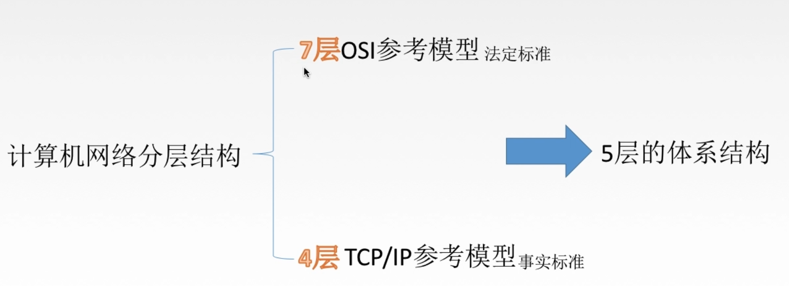
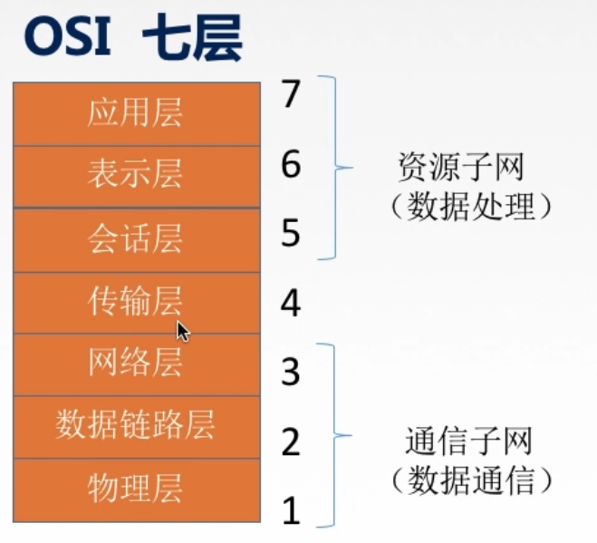
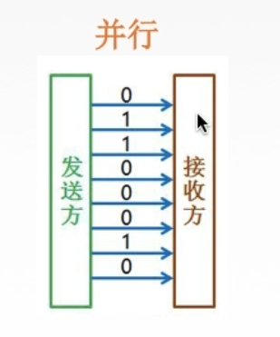

第一章
1.1.1 概念、组成、功能和分类
计算机网络的概念：
计算机网络：是一个将分散的、具有独立功能的计算机系统。通过通信设备与线路连接起来，由功能完善的软件实现资源共享和信息传递的系统。
计算机网络是互联的、自治的计算机集合。
互联-互联互通 通信链路
自治-无主从关系
计算机网络的功能：
1数据通信（连通性）
2资源共享
硬件 软件 数据
3分布式处理 多台计算机各自承担同一工作任务的不同部分
4提高可靠性(替代机)
5负载均衡 各计算机之间更亲密
计算机网络的组成：
1组成部分：硬件、软件、协议
2工作方式:
边缘部分 用户直接使用（C/S方式；P2P方式）
核心部分 为边缘部分服务
3功能组成：

资源子网 实现资源共享/数据处理
实现资源共享功能的设备和软件的集合
通信子网 实现数据通信
各种传输介质、通讯设备、相应的网络协议组成
计算机网络的分类：
1按分布范围分：
广域网WAN 城域网MAN 局域网WAN 个人区域网PAN
2按使用者分：
公用网 专用网
3按交换技术分：
电路交换 报文交换 分组交换
4按拓扑结构分：
总线型 星型 环型 网状型
5按传输技术分：
广播式网络（共享公共通信信道）
点对点网络（使用分组存储转发和路由选择机制）
1.1.2 标准化工作及相关知识
标准换工作
标准的分类：
法定标准 由权威机构制定的正式的、合法的标准
事实标准 某些公司的产品在竞争中占据了主流，时间长了，这些产品的协议和技术就成了标准
标准化工作：
RFC 因特网标准的形式
RFC要上升为因特网正式标准的四个阶段：
1）因特网草案 这个阶段还不是RFC文档
2）建议标准 这个阶段开始成为RFC文档
3）草案标准 IETF、IAB认证
4）因特网标准
标准化工作的相关组织
国际标准化组织ISO
国际电信联盟ITU
国际电气电子工程师协会IEEE
Internet工程任务组IETE
1.1.3 速率相关的性能指标
速率
速率即数据率或称数据传输率或比特率。
比特 1/0 位
连接在计算机网络上的主机在数字信道上传送熟虑位数的速率。
单位b/s，kb/s，Mb/s，Gb/s，Tb/s

带宽
”带宽”原本指某个信号具有的频带宽度，即最高频率与最低速率之差，单位是赫兹（HZ）。
计算机网络中，带宽用来表示网络的通讯线路传送数据的能力，通常是单位时间从网络的某一点到另一点所能通过的“最高数据率”。单位是“比特每秒”。网络设备所支持的最高速度。
吞吐量
表示单位时间内通过某个网络（或信道、接口）的数据量。单位是比特每秒。
吞吐量受网络的带宽或网络的额定速率的限制。
1.1.4 时延、时延带宽积、RTT和利用率
时延
指数据从网络（或链路）的一段传送到另一端所需的时间。也叫延迟或迟延。单位是s。

时延带宽积
时延带宽积=传播时延X带宽
又称为以比特为单位的链路长度
往返时延RTT
从发送方发送数据开始，到发送方收到接受方的确认，总共经历的时延。
RTT越大，在收到确认之前，可以发送的数据越多。

利用率
利用率分为信道利用率和网络利用率。
1.信道利用率
=有数据通过时间/（有+无）数据通过时间
2.网络利用率
=信道利用率加权平均值
1.2.1 分层结构、协议、接口、服务
为什么要分层？
发送前要完成的工作：
（1）发起通信的计算机必须将数据通信的通路进行激活。
（2）要告诉网络如何识别目的主机。
（3）发起通信的计算机要查明目的主机是否开机，并且与网络连接正常。
（4）发起通信的计算机要弄清楚，对方计算机中文件管理程序是否已经做好准备工作。
（5）确保差错和意外可以解决
怎么分层？
分层的基本原则：
1.各层直接相互独立，每层只实现一种相对独立的功能
2.各层之间界面自然清晰，易于理解，相互交流可能少
3.结构上可分隔开。各层都采用最合适的技术实现
4.保持下层对上层的独立性，上层单向使用下层提供的服务
5.整个分层结构应该促进标准化工作
正式认识分层结构:
1.实体：第n层中的活动元素称为n层实体。同一层的实体叫对等实体。
2.协议：为进行网络中的对等实体数据交换而建立的规则、标准或约定成为网络协议。

3.接口（访问服务点SAP）：上层使用下层的服务。
4.服务：下层为相邻上层提供的功能调用。【垂直】
概念总结:
网络体系结构是从功能上描述计算机网络结构。
计算机网络体系结构简称网络体系结构是分层结构。
每层遵守某个/些网络协议以完成本层功能。
计算机网络体系结构是计算机网路的各层及其协议的集合。
第n层在向n+1层提供服务时，此服务不仅包含第n层本身的功能，还包含由下层服务提供的功能。
仅仅在在相邻层间有接口，且所提供服务的具体实现细节对上一层完全屏蔽。
体系结构是抽象的，而实现是指能运行的一些软件和硬件。
1.2.2 OSI参考模型

ISO/OSI参考模型–怎么来的？
为了解决计算机网络复杂的大问题=》分层结构（按功能）
目的：支持异构网络系统的互联互通。
国际标准化组织（ISO）于1984年提出开放系统互连（OSI）参考模型。

ISO/OSI参考模型

 1.2.3 OSI参考模型（2）
1.2.3 OSI参考模型（2）
应用层：
所有能和用户产生网络流量的程序
典型应用层服务：
文件传输（FTP）
电子邮件（SMTP）
万维网（HTTP）
······
表示层：
用于处理两个通信系统中变换消息的表示方式（语法和语义）
功能一：数据格式变换
功能二：数据加密解密
功能三：数据压缩和恢复
主要协议：JPEG，ASCII
会话层：
向表示层实体/用户进程提供建立连接并在连接上有序地传输数据。
这是会话，也是建立同步（SYN）
功能一：建立、管理、终止会话
功能二：使用校验点可使会话在通信失效时从校验点/同步点继续回复通信，实现数据同步。
传输层：
负责主机中两个进程的通信，即端到端的通信。传输单位是报文段或用户数据报。
功能一：可靠传输、不可靠传输
功能二：差错控制
功能三：流量控制
功能四：复用分用
复用：多个应用层进程可同时使用下面运输层的服务。
分用：运输层把收到的信息分别交付到上面应用层中相应的进程。
网络层：
主要任务是把分组从源端传到目的端，为分组交换网上的不同主机提供通信服务。网络层传输单位是数据报。
功能一：路由选择 为了找到数据传输和的最佳路径
功能二：流量控制
功能三：差错控制
功能四：拥塞控制
数据链路层：
主要任务是把网络层传下来的数据报组装成帧。数据链路层的传输单位是帧。
功能一：成帧（定义帧的开始和结束）
功能二：差错控制 帧错+位错
功能三：流量控制
功能四：访问（接入）控制 控制对信道的访问
物理层：
主要任务是在物理媒体上实现比特流的透明传输。物理层传输单位是比特。
物理层传输单位是比特。
功能一：定义接口特性
功能二：定义传输模式 单工、半双工、双工
功能三：定义传输速率
功能四：比特同步
功能五：比特编码
1.2.4 TCP、IP参考模型和5层参考模型
OSI参考模型与TCP/IP参考模型

OSI参考模型与TCP/IP参考模型的相同点
1.都分层
2.基于独立的协议栈的概念
3可以实现异构网络互联
OSI参考模型与TCP/IP参考模型的不同点
1.OSI定义三点：服务、协议、接口
2.OSI先出现，参考模型先于协议发明，不偏向特定协议
3.TCP/IP设计之初就考虑到互联网异构问题，将IP作为重要层次

面向连接：第一是建立连接，发出一个建立连接的请求。第二阶段开始传输数据。最后传输完毕，必须释放连接。
无连接：直接进行数据传输。
五层参考模型

5层参考模型的数据封装与解封装

第二章
2.1.1 物理层的基本概念
基本概念：
物理层解决如何在连接各种计算机的传输媒体上传输数据比特流，而不是指具体的传输媒体。
物理层的主要任务：确定与传输媒体接口有关的一些特性。=》定义标准
机械特性：定义物理连接的特性，规定物理连接时所采用的规格、接口形状、引线数目、引脚数量和排列情况。
电气特性：规定传输二进制位时，线路上的信号的电压范围、阻抗匹配、传输速率、距离限制等。
功能特性：指明某条线上出现的某一电平表示何种意义，接口部件的信号线的用途。
例如：描述一个物理层接口引脚处于高电平时的含义等。
规程特性：（过程特性）定义各条物理线路的工作规程和时序的关系。
2.1.2 数据通信基础知识
典型的数据通信模型

源系统：信源，发送器
传输系统：传输系统
目的系统：接收器，信宿
数据通信相关术语
通信的目的是传送信息。
数据：传送信息的实体，通常是有意义的符号序列
信号：数据的电气/电磁的表现，是数据在传输过程中的存在形式。
数字信号：代表消息的参数取值是离散的。
模拟信号：代表消息的参数取值是连续的。
信源：产生和发送数据的源头。
信宿：接收数据的终点。
信道：信号的传输媒介。一般用来表示向某一个方向传送信息的介质，因此一条通信线路往往包含一条发送信道和接收信道。

三种通信方式
从通信双方信息的交互方式来看，可以有三种基本方式：
- 单工通信：只有一个方向的通信而没有反方向的交互，仅需要一条信道
- 半双工通信：通信的双方都可以发送或接收消息，但任何一方都不能同时发送和接收，需要两条信道
- 全双工通信：通信双方可以同时发送和接受信息，也需要两条信道
两种数据传输方式
传输方式：串行传输，并行传输
串行传输：速度慢，费用低，适合远距离

并行传输：速度快，费用高，适合近距离（常用于计算机内部的数据传输）

2.1.3 码元、波特、速率、带宽
码元
指用一个固定时长的信号波形（数字脉冲），代表不同离散值的基本波形，是数字通信中数字信号的计量单位，这个时长内的信号称为k进制码元，而该时长称为码元宽度。当码元的离散状态有M个时（M大于2），此时码元为M进制码元。
1码元可以携带多个比特的信息量。

K进制码元——4进制码元=>码元的离散状态有4个=>4中高低不同的信号波形 00、01、10、11 此时一个码元代表2比特内容
速率、波特、带宽
速率也叫数据率，是指数据的传输速率，表示单位时间内传输的数据量。可以用码元传输速率和信息传输速率表示。
- 码元传输速率：别名码元速率、波形速率、调制速率、符号速率等。他表示单位时间内数字通信系统所传输的码元个数（也可称为脉冲个数或信号变化的次数），单位试试波特（Baud）。1波特表示数字通信系统每秒传输一个码元。这里的码元可以是多进制的，也可以是二进制的，但码元速率与进制数无关。
- 信息传输速率：别名信息速率、比特率等，表示单位时间内数字通信系统传输的二进制码元数（即比特数），单位是比特/秒（b/s）
关系：
若一个码元携带n bit的信息量，则M Baud的码元传输速率所对应的信息传输速率为M*n bit/s。
带宽：表示单位时间内从网络中的某一点到另一点所能通过的“最高数据率”，常用来表示网络的通信线路所能传输数据的能力。单位b/s。
2.1.4 奈氏准则和香农定理
失真：

影响失真程度的因素：
- 码元传输速率
- 信号传输距离
- 噪声干扰
- 传输媒体质量
失真的一种现象–码间串扰

信号带宽是信道能通过的最高频率和最低频率之差
码间串扰：接收端收到的信号波形失去了码元之间清晰界限的现象
奈式准则：
在理想低通（无噪声，宽带受限）条件下，为了避免码间串扰，极限码元传输速率为2W Baud， W是信道带宽，单位是Hz。
极限数据传输率 :

传输速率慢：那么我们可以清晰识别每一个码元。
传输速率快：因为码间串扰，所有不能清晰识别。
- 信道的频带越宽（即通过的信号高频分量越多），就可以用更高的速率进行码元的有效传输。
- 奈式准则给出了马原传输速率的限制，但并没有对信息传输速率给出限制。
- 由于码元传输速率受到奈氏准则的制约，所以要提高数据的传输速率，就必须设法使每个码元都能携带更多比特的信息量，这就需要多元制的调制方法。
香农定理：
在带宽受限且有噪声的信道中，为了不产生误差，信息的数据传输速率有上限值。
噪声：存在于所有的电子设备和通信信道中。由于噪声随机产生，它的瞬时值有时会很大，因此噪声会使接收端对码元的判决产生错误。但是噪声的影响是相对的，若信号较强，那么噪声的影响就相对较小。因此，信噪比就很重要。
信噪比=信号的平均功率/噪声的平均功率。常记作S/N，并用分贝（dB）作为度量单位，即：
信噪比（dB）= 10log10（S/N）
信道的极限数据传输速率：

- 信道的带宽或者信道中的信噪比越大，则信息的极限传输速率越高。
- 对一定的传输带宽和一定打的信噪比，信息传输速率的上限就确定了。
- 只要信息的传输速率低于信道的极限传输速率，就一定能找到某种方法来实现无差错的传输。
- 香农定理得出的为极限信息传输速率，实际信道能达到的传输速率要比它低不少。
- 从香农定理可以看出，若信道带宽W或信噪比S/N没有上限（不可能），那么信道的极限信息传输速率也就没有上限。

2.1.5 编码与调制
基带信号与宽带信号
信道：信号的传输媒介。一般用来表示向某一个方向传送信息的介质，因此一条信道线路往往包含一条发送信道和一条接收信道。

信道上传输的信号：
基带信号
将数字信号1和0直接用两种不同的电压表示，再送到数字信道上去传输（基带传输）。来自信源的信号，像计算机输出的代表各种文字或图像文件的数据信号都属于基带信号。基带信号就是发出了直接表达要传输的信息的信号。
宽带信号
将基带信号进行调制后形成的频分复用模拟信号，再传送到模拟信道上去传输（宽带传输）。把基带信号经过载波调制后，把信号的频率范围搬移到较高的频段以便于再信道中传播。
传输距离较近时，采用基带传输方式
传输距离较近时，采用宽带传输方式
编码与调制

数字数据编码为数字信号

非归零编码（NRZ）
高1低0：编码容易实现，但没有检错功能，且无法判断一个码元的开始和结束，以至于收发双方难以保持同步

曼彻斯特编码
将一个码元分成两个相等的间隔，前一个间隔为低电平后一个间隔为高电平表示码元1；码元0正好相反。也可以采用相反的规定。该编码的特点是在每一个码元的中间出现电平跳变，位中间的跳变即作时钟信号，又作数据信号，但它所占的频带宽度是原始基带宽度的两倍。

每一个码元都被调成两个电平，数据传输速率只有调制速率（码元传输速率）的1/2。
差分曼彻斯特编码
同1异0
若码元为1，则前半个码元的电平与上一个码元后半个码元的电平相同。若为0，则相反。特点是：在每个码元的中间，都有一次电平的跳转，可以实现自同步，且抗干扰性强于曼彻斯特编码。

归零编码（RZ）
信号电平在一个码元之内都要恢复到零的这种编码方式

反向不归零编码（NRZI）
信号电平翻转表示0，信号电平不变表示1

4B/5B编码
比特流中插入额外的比特以打破一连串的0或1，就是5个比特来编码4个比特的数据，之后再传给接收方，因此称为4B/5B。编码效率是80%。
只采用16钟不同的4位码，其他的16种作为控制码或保留。
数字数字调制为模拟信号
数字数据调制技术在发送端将数字信号转换为模拟信号，而在接收端将模拟信号还原为数字信号，分别对应于调制解调器的调制和解调过程。

调幅+调相（QAM）
模拟数据编码为数字信号
计算机内部处理的是二进制数据，处理的都是数字音频，所有需要将模拟音频通过采样、量化转化成有限个数字表示的离散序列（即实现音频数字化）
最典型的例子就是对音频信号进行编码的脉码调制（PCM），在计算机应用种，能够达到最高保真水平的就是PCM编码，被广泛用于素材保存及音乐欣赏，CD、DVD以及我们常见的WAV文件中均有应用。它主要包括三步：抽样、量化、编码
抽样：对模拟信号周期性扫描，把时间上连续的信号变成时间上离散的信号。
采样定理：

量化：把抽样取得的电平幅值按照一定的分级标度转化为对应的数字值，并取整数，这就把连续的电平幅值转化为离散的数字量。
编码：把量化的结果转化为与之对应的二进制编码

模拟数据调制为模拟信号
为了实现传输有效性，可能需要较高的频率。这种调制方式还可以使用频分复用技术，充分利用带宽资源。在电话机和本地交换机所传输的信号是采用模拟信号传输模拟数据的方式：模拟的声音数据是加载到模拟的载波信号中传输的。
总结

2.2 物理层传输介质
传输介质及分类
传输介质也称传输媒体/传输媒介，它就是数据传输系统中在发送设备和接收设备之间的物理通路。
传输媒体并不是物理层：
传输媒体在物理层的下面，因为物理层是体系结构的第一层，因此有时称传输媒体为0层。在传输媒体中传输的是信号，但传输媒体并不知道所传输的信号代表什么意思。但物理层规定了电气特性，因此能够识别所传送的比特流。
传输介质：
- 导向性传输介质->电磁波被导向固体媒介（铜线/光纤）传播。
- 非导向性传输介质->自由空间，介质可以是空气、真空、海水等。
导向性传输介质–1.双绞线
双绞线是古老、又最常用的传输介质，它由两根采用一定规则并排绞合的、相互绝缘的铜导线组成。

绞合可以减少相邻导线的电磁干扰。
为了进一波提高抗电磁干扰能力，可在双绞线的外面再加上一个由金属丝编织成的屏蔽层，这就是屏蔽双绞线（SIP），无屏蔽层的双绞线就称为非屏蔽双绞线（UTP）。
特点：
- 双绞线价格便宜，是最常用的传输介质之一，在局域网和传统电话网中普遍使用。
- 模拟传输和数字传输都可以使用双绞线，其通信距离一般为几公里到十公里。
- 距离太远时，对于模拟传输，要用放大器放大衰减的信号；对于数字传输，要用中继器将失真的信号整形。
导向性传输介质–2.同轴电缆
同轴电缆由导体铜质芯线、绝缘层、网状编织屏蔽层和塑料外层构成。按特性阻抗数值的不同，通常将同轴电缆分为两类；50Ω同轴电缆和75Ω同轴电缆。其中，50Ω同轴电缆主要用于传送基带数字信号，又称为基带同轴电缆，它在局域网中得到广泛应用；75Ω同轴电缆主要用于传送宽带信号，又称为宽带同轴电缆，它主要用于有线电视系统。

由于外导体屏蔽层的作用，同轴电缆抗干扰特性比双绞线好，被广泛用于传输较高速率的数据，其传输距离更远，但价格比双绞线贵。
导向性传输介质–3.光纤
光纤通信就是利用光导纤维（简称光纤）传递光脉冲来进行通信。有光脉冲为1，无光脉冲为0.而可见光的频率大约为10的8次方MHz，因此光纤通信系统的带宽远远大于目前其他各种传输媒体的带宽。
光纤主要由纤芯（实心的！）和包层构成，光波通过纤芯进行传导，包层较纤芯有较低的折射率。当光线从高折射率的介质射向低折射率的介质时，其折射角将大于入射角。因此，当入射角够大就会出现全反射，即光线碰到包层时候就会折射回纤芯、这个过程不断重复，光也就沿着光纤传输下去。


光缆：一根光缆少则只有一根光纤，多则包括十到数百根光纤。
光纤的特点：
- 传输损耗小，中继距离长，对远距离传输特别经济
- 抗雷电和电磁干扰性能好
- 无串音干扰，保密性好，也不易被窃听或截取数据
- 体积小，重量轻。
非导向性传输介质：
无线单波
- 信号向所有方向传播
- 较强的穿透能力，可远距离传输，广泛用于通信领域（手机通信）
微波
信号固定方向传播
微波通信频率较高、频段范围宽，因此数据率很高。
地面微波接力通信
卫星通信
- 优点：
- 通信容量大
- 距离远
- 覆盖范围广
- 广播通信和多址通信
- 缺点：
- 传播时延长
- 受天气影响大
- 误码率高
- 成本高
红外线、激光
- 信号固定方向传播
- 把要传输的信号转换为各自的信号格式，即红外光信号和激光信号。再在空间中传播。
总结

2.3 物理层设备
中继器
诞生原因：由于存在损耗，在线路上传输的信号功率会逐渐衰减，衰减到一定程度将造成信号失真，因此会导致接收错误。
中继器功能：对信号进行再生和还原，对衰减的信号进行放大，保持与原数据相同，以增加信号传输的距离，延长网络的长度。（再生数字信号）
中继器的两端：
- 两端的网络部分是网段，而不是子网，适用于完全相同的两类网络的互连，且两个网段速率要相同。
- 中继器只将任何电缆段上的数据发送到另一段电缆上，它仅作用于信号的电气部分，并不管数据中是否有错误数据或不适用于网段的数据
- 两端可连相同媒体，也可连不同媒体
- 中继器两端的网段一定要是同一个协议（不会存储转发）
5-4-3规则：
网络标准中都对信号的延迟范围作了具体的规定，因而中继器只能在规定的范围内进行，否则会网络故障。
5个网段，4个物理层网络设备，只有三个网段可以连接计算机。
集线器（多口中继器）
功能：对信号进行放大转发，对衰减的信号进行放大，接着转发到其他所有（除输入端口外）处于工作状态的端口上，以增加信号传输的距离，延长网络的长度。不具备信号的定向传送能力，是一个共享式设备。

集线器不能分割冲突域
连在集线器上的工作主机平分带宽。
第三章
3.1 数据链路层的基本概念
结点：主机、路由器
链路：网络中两个结点之间的物理通道，链路的传输介质主要有双绞线、光纤和微波。分为有线链路和无线链路。
数据链路：网络中两个结点之间的逻辑通道，把实现控制数据传输协议的硬件和软件加到链路上就构成数据链路。
数据链路层负责通过一条链路从一个结点向另一个物理链路直接相连的相邻结点传送数据报。
数据链路层功能概述
数据链路层在物理层提供服务的基础上向网络层提供服务，其最基本的服务是将源自网络层来的数据可靠地传输到相邻结点的目标机网络层。其主要作用是加强物理层传输原始比特流的功能，将物理层提供的可能出错的物理连接改造为逻辑上无差错的数据链路，使之对网络层表现为一条无差错的链路。
功能一：为网络层提供服务。
- 无确认无连接服务
- 有确认无连接服务
- 有确认面向连接服务
功能二：链路管理，即连接的建立、维持、释放
功能三：组帧
功能四：流量控制
- 限制发送方
功能五：差错控制（帧错/位错）
3.2 封装成帧&透明传输
封装成帧就是在一段数据的前后部分添加首部和尾部，这样就构成了一个帧。接收端在受到物理层上交的比特流后，就能根据首部和尾部的标记，从收到的比特流中识别帧的开始和结束。
首部和尾部包含许多控制信息，他们的一个重要作用：帧定界（确定帧的界限）
帧同步：接收方应当能从接收到的二进制比特流中区分出帧的起始和终止。

组帧的四种方法：
- 字符计数法
- 字符填充法
- 零比特填充法
- 违规编码法
透明传输
透明传输是值不管所传数据是什么样的比特组合，都应当在链路上传送。因此，链路层就”看不见“有什么妨碍数据传输的东西。
当所传数据中的比特组合恰巧与某一个控制信息一样时，就必须采取适当的措施，使接收方不会将这样的数据误认为某种控制信息。这样才能保证数据链路层的传输是透明的
字符计数法
帧首部使用一个计数字段（第一个字节，八位）来表明帧内字符数。

缺点：一旦技术字段错了，后面就全错。
字符填充法

- 当传送的帧是由文本文件组成时（文本文件的字符都是从键盘上输入的，都是ascii码）。不管从键盘上输入什么字符都可以放在帧里传过去，即透明传输。
- 当传送的帧是由ascii码的文本文件组成时（二进制代码的程序或图像等）。就要采用字符填充方法实现透明传输。
当数据中含有很多控制信息时，在控制信息前加入一个字节填充。

接收时，将填充字符删去，

零比特填充法
操作：
- 在发送端，扫描整个信息字段，只要连续5个1，就立即填入1个0
- 在接收端收到一个帧时，先找到标志字段确定边界，再用硬件对比特流进行扫描。发现连续5个1时，就把后面的0删掉。
保证了透明传输：在传送的比特流中可以传送任意比特组合，而不会对帧边界的判断错误。
违规编码法
比如：

可以用”高-高“，”低-低“来定界帧的起始和终止。
目前较为普遍运用哦的帧同步法是比特填充法和违规编码法
3.3.1 差错控制（检错编码）
概况来说，传输中的差错都是由于噪声引起的。
全局性，由于线路本身电气特性所产生的随机噪声（热噪声），是信道固有的，随机存在的。
解决方法：提高信噪比来减少或避免干扰（对传感器下手）
外界特定的短暂原因所造成的冲击噪声，是产生差错的主要原因。
解决办法：通常利用编码技术来解决。

无确认无连接服务：通信质量好的有线传输链路
有确认无连接服务：通信质量差的无线传输链路
有确认面向连接服务：通信质量差的无线传输链路
数据链路层的差错控制
比特错：
- 检错编码
- 奇偶校验码
- 循环冗余码CRC
- 纠错编码
- 海明码
数据链路层编码和物理层的数据编码与调制不同。物理层编码针对的是单个比特，解决传输过程中比特的同步问题，如曼彻斯特编码。而数据链路层的编码针对的是一组比特，它通过冗余码的技术实现一组二进制比特串在传输过程中是否出现了差错。
在数据发送之前，先按某种关系附加上一定的冗余位，构成一个符合某一规则的码字后再发送。当要发送的有效数据变化时，相应的冗余位也随之变化，使码字遵从不变的规则。接收端根据收到码字是否仍符合原规则，从而判断是否出错。
检错编码–奇偶校验码
奇偶校验码：n-1位信息元和1位校验元
- 奇校验码
- 偶校验码
只能检查出奇数个比特错误，检错能力为50%
检错编码–CRC循环冗余码


接收端检错过程
把接收端收到的每一个帧都除以同样的除数，然后检查得到的余数R。
- 余数为0，判定这个帧没有出错，接受。
- 余数不为0，判定这个帧有差错（无法确定到位），丢弃。
3.3.2 差错控制（纠错编码）
纠错编码–海明码
- 发现双比特错，纠正单比特错
工作流程：

海明不等式：
2^r >= k+r+1
r是冗余信息位，k是信息位
对于D=101101
根据海明不等式可得，r=4。
假设这4位校验码分别为P1,P2,P3,P4；Pi放在2的i-1次方位置
数据从左到右为D1,D2,D3,D4,D5,D6。然后依次将空余位置填满

求出校验码的值

Pi是用来校验二进制第i位为1的数据，Pi与所有被校验数据的异或后得0，从而求出Pi的值。
得到0010011101
检错并纠错
假设第五位出错，因此收到的数据为0010111101，令所有要校验的位异或运算。
二进制序列算出来为0101，恰好对应5
3.4.1 流量控制与可靠传输机制
数据链路层的流量控制
较高的发送速度和较低的接受能力不匹配，会造成传输出错，因此流量控制也是数据链路层的一项重要工作。
数据链路层的流量控制是点对点的，而传输层的流量控制是端到端的。
数据链路层流量控制手段：接收方收不下就不回复确认
传输层流量控制手段：接收端给发送端一个窗口公告
流量控制方法
- 停止-等待协议
- 每发送完一个帧就停止发送，等待对方的确认，在收到确认后再发送下一个帧。

- 滑动窗口协议

- 后退N帧协议（GBN）
- 选择重传协议（SR）

可靠传输、滑动窗口、流量控制
可靠传输：发送端发什么，接收端接收什么
流量控制：控制发送速率，使接收方有足够的缓冲空间来接收每一个帧
滑动窗口解决：
- 流量控制（收不下就不确认，发送方就不会发送）
- 可靠传输（发送方自动重传）
3.4.2 停止-等待协议
为什么要有停止-等待协议？
除了比特出差错，底层信道还会出现丢包问题。
- 丢包：物理线路故障、设备故障、病毒攻击、路由信息错误等原因，会导致数据包的丢失。
停等协议–无差错情况

停等协议–有差错情况
数据帧丢失或检测到帧出错

- 发完一个帧后，必须保留它的副本
- 数据帧和确认帧必须编号
ACK丢失

ACK迟到

停等协议性能分析
优点：简单
缺点：

信道利用率：
发送方在一个发送周期内，有效地发送数据所需要的时间占整个发送周期的比率=（L/C）/T
T发送周期，从发送数据开始，到收到第一个确认帧为止
此周期内发送L比特数据
C发送方数据传输率
- 信道吞吐量=信道利用率*发送方的发送速率
3.4.3 选择重传协议
GBN协议的弊端
累计确认->批量重传
可不可以只重传出错的帧？
解决方法：设置单个确认，同时加大接受窗口，设置接受缓存，缓存乱序到达的帧。
选择重传协议中的滑动窗口


SR发送方必须响应的三件事
上层的调用
从上层收到数据后，SR发送方检测下一个可用于该帧的序号，如果序号位于发送窗口内，则发送数据帧；否则就像GBN一样，要么将数据缓存，要么返回给上层之后再传输。
收到了一个ACK
如果收到了ACK，加入该帧序号在窗口内，则SR发送方将那个被确认的帧标记为已接收。如果该帧序号是窗口的下界（最左边第一个窗口对应的序号），则窗口向前移动到具有最小序号的未确认帧处。如果窗口移动了并且有序号在窗口内的未发送帧，则发送这些帧。
超时事件
每个帧都有自己的定时器，一个超时事件发生后只重传一个帧
SR接收方要做的事
- 来着不拒
- SR接收方将确认一个正确接收的帧而不管其是否按序。失序的帧将被缓存，并返回给发送方一个该帧的确认帧【收谁确认谁】，直到所有帧（即序号更小的帧）皆被收到为止，这时才可以将一批帧按序交付给上层，然后向前移动滑动窗口。
- 如果收到了窗口外（小于窗口下界）的帧，就返回ACK
- 其他情况，忽略
运行中的SR
假设发送窗口和接收窗口尺寸都为4。

滑动窗口长度
发送窗口最好等于接收窗口。（大了会溢出，小了没意义）
WTmax=WRmax=2^(n-1)
序号是用n个比特表示，滑动窗口是序号数的一半。
3.4.4 后退n帧协议（GBN）
后退n帧协议的滑动窗口
发送窗口：发送方维持一组连续的允许发送的帧的序号。如果发送窗口最左侧的帧收到了ACK，则发送窗口向前移动1帧。
接收窗口：接收方维持一组允许接收帧的序号。（后退n帧协议的接收窗口长度是1），当接收窗口的帧接收到后，返回一个ACK，然后接收窗口向前移动1帧
GBN发送方必须响应的三件事
上层的调用
上层要发送数据时，发送方先检查发送窗口是否已满，如果未满，则产生一个帧并将其发送；如果窗口已满，发送方只需将数据返回给上层，暗示上层窗口已满，上一层等一会再发送。（实际上，发送方可以缓存这些数据，窗口不满时再发送帧）。
收到一个ACK
GBN协议中，对n号帧的确认采用累计确认的方式，标明接收方已经收到n号帧和它之前的全部帧。
超时事件
出现丢失和时延过长帧时发送方重传所有已发送但没有确认的帧。
GBN接收方要做的事
正常情况：
如果正确收到了n号帧，并且按序，那么接收方为n帧发送一个ACK，并将该帧中的数据部分交付给上层。
其余情况：
其余情况都丢弃帧，并为最近按序接收的帧重新发送ACK。接收方无需缓存任何失序帧，只需要维护一个信息：下一个按序接收的帧序号）。
运行时的GBN协议

滑动窗口长度
发送窗口尺寸过大，就会使得接收方无法区别新帧和旧帧。
总结
- 累计确认：标明接收方已经收到n号帧和它之前的全部帧。 超时事件
- 接收方只按序接收帧，不按序就被丢弃
- 确认序列号最大的、按序到达的帧
- 发送窗口最大为2^n-1,n个比特对帧编号。
性能分析
优点：因连续发送数据帧而提高了信道利用率。
缺点：重传时需要把原来已经正确传送的数据帧重传，使传送效率降低。
3.5.1 信道划分介质访问控制
传输数据使用的两种链路
点对点链路
两个相邻节点通过一个链路相连，没有第三者。
应用：PPP协议，常用于广域网
广播式链路
所有主机共享通信介质
应用：早期的总线以太网、无线局域网，常用于局域网。
典型拓扑结构：总线型、星形（逻辑总线型）
介质访问控制
内容：采取一定的措施，使得两对节点之间的通信不会发生相互干扰的情况。
介质访问控制：
- 静态划分信道–信道划分介质访问控制
- 频分多路复用FDM
- 时分多路复用TDM
- 波分多路复用WDM
- 码分多路复用CDM
- 动态分配信道
- 轮询访问介质访问控制
- 令牌传递协议
- 随机访问介质访问控制
- ALOHA协议
- CSMA协议
- CSMA/CD协议
- CSMA/CA协议
- 轮询访问介质访问控制
信道划分介质访问控制：将使用介质的每个设备与来自同一信道的其他设备的通信隔离开，把时域和频域资源合理地分配给网络上的设备。
多路复用技术：把多个信号组合在一条物理信道进行传输，使得多个计算机或终端设备共享信道资源，提高信道利用率。

把一条广播信道，逻辑上分成几条用于两个节点之间通信的互不干扰的子信道，实际就是把广播信道转变为点对点信道。
静态划分信道
频分多路复用FDM

用户在分配到一定的频带后，在通信过程中自始自种都占用这个频带。频分复用的所有用户在同样的时间占用不同的带宽（频率带宽）资源。
优点：
- 充分利用传输介质带宽，系统效率较高；
- 由于技术比较成熟，实现也比较容易
时分多路复用TDM

将时间划分一段段等长的时分复用（TDM帧）。每一个时分复用的用户在每一个TDM帧中占用固定序号的时隙，所有用户轮流占用道。
TDM帧是在物理层传送的比特流所划分的帧，标志一个周期。
改进的时分复用–统计时分复用STDM

每一个STDM帧中的时隙数是小于连接在集中器上的用户数的。各用户有了数据就随时发送集中器的输入缓存，然后集中器按顺序依次扫描输入缓存，把缓存中的输入数据放入STDM帧中，一个STDM帧满了就发出。STDM帧不是固定分配时隙，而是按需动态分配时隙。
波分多路复用WDM
波分多路复用就是光的频分多路复用。在一根光纤中传输多种不同波长（频率）的光信号，由于波长（频率）不同，所以各路光信号互不干扰，最后再用波长分解复用器将各路波长分解出来。

码分多路复用CDM
码分多址（CDMA）是码反复用的一种方式。
1个比特分为多个码片/芯片（chip），每一个站点都指定一个唯一的m位的芯片序列。
发送1时站点发送芯片序列，发送0时发送芯片序列反码。（通常把0写成-1）
多个站点同时发送数据的时候，要求各个站点芯片序列相互正交。
如何合并：各路数据在信道中被线性相加
如何分离：合并的数据和源站的芯片序列规格化内积。
动态划分信道
3.5.2 ALOHA协议
纯ALOHA
协议思想：
不监听信道，不按时间槽发送，随机重发。

冲突检测：
如果发生冲突，接收方就会检测出差错，然后不予确认，发送方在一定时间内收不到就判断发生冲突。检查发送时间前后T0时间内是否有人发送数据，没有就说明没有发生冲突。
冲突解决：
超时后等一随机时间再重传。
时隙ALOHA协议
协议思想：
把时间分成若干个相同的时间片，所有用户再时间在时间片开始时刻同步接入网络信道，若发送冲突，则必须等到下一个时间片开始时刻再发送。

优点：时隙ALOHA协议让所有站点都在时间片开始的时候发送数据，使得每个帧只有不冲突和完全冲突两种可能，从而避免了部分冲突。
3.5.3 CSMA协议（载波监听多路访问协议）
ALOHA协议缺点：所有用户想发就发，不管别的用户是否想要发送数据。
CS(载波监听)：每一个站在发送数据之前要检测一下总线上是否有其他计算机在发送数据。
- 当几个站同时在总线上发送数据时，总线上的信号电压摆动值将会增大（互相叠加）。当一个站检测到的信号电压摆动值超过一定门限时，就认为总线上至少有两个站同时发送数据，表明产生了冲突。
MA（多点接入）：表示许多计算机以多点接入的方式连接在一根总线上。
协议思想：发送帧之前，监听信道

坚持CSMA
- 空闲则直接传输，不必等待。
- 忙则一直监听，直到空闲马上传输
- 如果有冲突（即有两个用户都发现信道空闲，一起发送数据而冲突），则等待一个随机长的时间再监听
优点：只要媒体空闲，站点马上发送，避免了媒体利用率的损失
缺点：冲突不可避免
非坚持CSMA
- 空闲则直接传输，不必等待
- 忙则等待一个随机的时间之后再进行监听
优点：采用随机的重发延迟时间可以减少冲突发生的可能性。
缺点：可能会存在大家都在随机时间的等待，导致媒体的空闲。
p-坚持CSMA
- 空闲则以p概率直接传输，概率1-p等到到下一个时间槽再传输
- 如果忙则等待下一个时间槽再进行监听
优点：既能减少冲突，也能减少媒体空闲时间
缺点：发生冲突后还是坚持把数据帧发送完，造成浪费
总结

3.6.4 CSMA/CD协议
载波监听多点接入/碰撞检测
CS(载波监听)：每一个站在发送数据之前以及发送数据时要检测一下总线上是否有其他计算机在发送数据。
MA（多点接入）：表示许多计算机以多点接入的方式连接在一根总线上。总线型网络
CD:碰撞检测，“边发送边监听”，适配器边发送数据边检测信道上信道电压的变化情况，以便于判断自己发送数据时其他站是否也在发送数据。（半双工网络）
传播时延对载波监听的影响
当站点发送的数据在传播过程中，其他站点因为数据还没到达，所以以为信道是空闲的，所以也会发送数据，从而造成冲突。

只要进过2t的时间还没有检测到碰撞，就能肯定这次发送不会发生碰撞
如何确定碰撞后的重传时机？
- 确定基本退避（推迟）时间为争用期2t
- 定义参数k，它等于重传次数，但k不超过10，即k=[重传次数，10]。当重传次数不超过10，k等于重传次数。当重传次数大于10时，k就不再增大而一直等于10。
- 从离散的整数集合[0,1, ,2^k-1]中随机取出一个数r，重传所需的时间就是r倍的基本退避时间，即2rt。
- 当重传16次仍不能成功，说明网络太拥挤，认为此帧永远无法正确发出，抛弃此帧并向高层报告出错。
最小帧长问题
希望检测到碰撞的时候，帧还没有发送完。
帧的传播时延至少两倍于信号在总线中的传播时延。

3.5.5 CSMA/CA协议
CA：碰撞避免
为什么要有CSMA/CA？因为CSMA/CA常用于无线局域网，而CSMA/CD协议常用于以太网
无线局域网
- 无法做到360度全面碰撞检测
- 隐蔽站
- 当A和C都检测不到信号，认为信道空闲时，同时向终端B发送数据帧，就会导致冲突。
工作原理：
发送数据前，先检测信道是否空闲。
- 如果是空闲，则发送RTS，RTS包括发射端地址、接收端地址、下一份数据将持续发送的时间等信息
- 信道忙则等待
- 接收端收到RTS，将响应CTS
- 发送端收到CTS后，开始发送数据帧（同时预约信道：发送方告知其他站点自己要传多久数据）
- 接收端收到数据帧后，将CRC（循环冗余校验）来检验数据是否正确，正确则响应ACK帧
- 发送方收到ACK就可以下一个数据帧的发送，若没有则一直重传至规定重发次数为止（采用二进制指数退避法来确定随机的推迟时间）
CSMA/CA与CSMA/CD
相同点：
- 都属于CSMA的思路，都是先听再说。两个在接入信道之前都需要对信道进行监听。当发现信道空闲后，才能接入
不同点：
- 传播介质不同：
- CSMA/CA用于以太网（有线）
- CSMA/CD用于无线局域网（无线）
- 载波检测方式不同：
- CSMA/CA采用能量检测（ED）、载波检测（CS）、能量载波混合检测三种检测信道空闲的方式
- CSMA/CD通过电缆中电压的变化来检测
- CSMA/CA是检测冲突，CSMA/CD是避免冲突
- 都有重传的上限
3.5.4 轮询访问介质访问控制
介质访问控制
信道划分介质访问控制（MAC）协议：基于多路复用技术划分资源
- 当网络负载重：共享信道效率搞，且公平
- 当网络负载低：共享效率低
随机访问MAC协议：用户根据意愿随机发送信息，发送信息时可独占信道带宽。
- 当网络负载重：产生冲突开销
- 当网络负载轻：共享信道效率高，单个节点可利用信道全部带宽
轮询访问MAC协议:即不产生冲突，又要发送时占全部带宽
轮询协议
主节点轮流”邀请“从属结点发送数据。
问题：
- 轮询开销
- 等待延迟
- 单点故障
令牌传递协议

令牌：一个特殊格式的MAC控制帧，不含任何信息。
控制信道的使用，确保同一时刻只有一个结点独占信道。
令牌环网无碰撞
每一个结点都可以在一定时间内（令牌持有时间）获得发送数据的权力，并不是无限制地持有令牌
问题：
- 令牌开销
- 等待延迟
- 单点故障
应用于令牌环网（物理星型拓扑，逻辑环形拓扑）
采用令牌传送协议常用于负载较重、通信量较大的网络中
3.6.1 局域网基本概念和体系结构
局域网：简称LAN，是指某一区域内由多台计算机互联成的计算机组，使用广播信道。
特点：
- 覆盖的地理范围较小，只在一个相对独立的局部范围内联，如一座或集中的建筑群内。
- 使用专门铺设的传输介质（双绞线、同轴电缆）进行联网，数据传输率高。
- 通信延迟时间短，误码率低，可靠性高。
- 各站为平等关系，共享传输信道。
- 多采用分布式控制和广播式通信，能进行广播和组播。
主要要素：网络拓扑、传输介质、介质访问方法
局域网拓扑结构

局域网传输介质
- 局域网
- 有线局域网
- 常用介质：双绞线、同轴电缆、光纤
- 无线局域网
- 电磁波
- 有线局域网
局域网介质访问控制方法
- SCMA/CD
- 令牌总线
- 令牌环
3.6.2 以太网
以太网（Ethernet）指的是由Xerox、Intel和DEC公司联合开发的基带总线局域网规范，是当今现有局域网采用的通信协议标准。以太网使用CSMA/CD技术。
以太网在局域网各种技术中占统治性地位：
- 造价低廉
- 是应用最广泛的局域网技术
- 比令牌环网、ATM网便宜、简单
- 满足网络速率要求
以太网的两个标准：
- DIX Ethernet V2：第一个局域网（以太网）规约
- IEEE 802.3：IEEE 802委员会802.3工作组制定的第一个IEEE的以太网标准。
以太网提供的无连接、不可靠的服务
无连接：发送方和接收方之间无“握手过程”。
不可靠：不对发送方的数据帧编号，接收方不向发送方进行确认，差错帧直接丢弃，差错纠正由高层负责。
以太网只实现无差错接收、不实现可靠传输。
以太网传输介质与拓扑结构的发展

以太网拓扑：逻辑上总线型，物理上星型。
10BASE-T以太网
10BASE-T是传送基带信号的双绞线以太网，T表示采用双绞线，现10BASE-T采用的是无屏蔽双绞线（UTP），传输速率是10Mb/s。
逻辑上总线型，物理上星型，采用曼彻斯特编码，使用CSMA/CD技术。
适配器与MAC地址
计算机与外界有局域网的连接是通过通信适配器的。

- ROM上有计算机硬件地址MAC地址
MAC地址：每个适配器有一个全球唯一的48位二进制地址，前24位代表厂家（由IEEE规定），后24位厂家自己指定。常用6个十六进制数表示。
以太网MAC帧
最常用的MAC帧是以太网V2的格式

插入的8B被称为前导码，不是MAC帧的一部分。
类型：表示IP数据包所使用的协议。
FCS：CRC循环冗余检验的检验序列。
与IEEE802.3的区别：
- 第三个字段是长度/类型
- 当长度/类型字段值小于0x0600时，数据字段必须装入LLC子层。
高速以太网
速率大于等于100Mb/s的以太网称为高速以太网。
10BASE-T以太网
在双绞线上传送100Mb/s基带信号的星型拓扑以太网，仍使用IEEE802.3的CSMA/CD协议。
支持全双工和半双工，可在全双工方式下工作而无冲突。
吉比特以太网
在光纤或双绞线上传送1Gb/s信号。
支持全双工和半双工，可在全双工方式下工作而无冲突。
10吉比特
在光纤上传送10Gb/s信号。
只支持全双工，无争用问题
3.6.3 IEEE 802.11
IEEE 802.11是无线局域网通用的标准，它是由IEEE所定义的无线网络通信的标准。

802.11的MAC帧头格式

源地址和目的地址：是两个设备的MAC地址
接收端和发送端：设备连接的网络基站的MAC地址

有固定基础设施无线局域网

无固定基础设施无线局域网的自组织网络

3.7 PPP协议&HDLC协议
广域网
广域网（WAN，Wide Area Nerwork），通常跨接很大的物理范围，所覆盖的范围从几十公里到几千公里，它能连接多个城市或国家，或横跨几个洲并能提供远距离通信，形成国际性的远程网络。
广域网的通信子网主要使用分组交换技术。广域网的通信子网可以利用公用分组交换网、卫星通信网和无线分组交换网，它将分布在不同地区的局域网和计算机系统互联起来，达到资源共享的目的。如因特网是世界范围内最大的广域网。

PPP协议的特点
点对点协议PPP（Point-to-Point）是目前使用最广泛的数据链路层协议，用户使用拨号电话接入因特网时一般都使用PPP协议。
PPP协议只支持全双工链路。
PPP协议应满足的要求
- 简单：对于链路层的帧，无需纠错，无需序号，无需流量控制
- 封装成帧：帧定界符
- 透明传输：与帧定界符一样的比特组合的数据应该如何处理：异步线路用字节填充，同步线路用比特填充。
- 多种网络层协议：封装的IP数据报可以采用多种协议
- 多种类型链路 串/并行、同/异步、电/光
- 差错检测：错就丢弃
- 检测连接状态：链路是否正常工作
- 最大传送单元：数据部分最大长度MTU
- 网络层地址协商：知道通信双方的网络层地址
- 数据压缩协商
PPP协议无需满足的要求
- 无需纠错
- 无需流量控制
- 无需序号
- 不支持多点线路
PPP协议的三个组成部分
- 一个将IP数据报封装到串行链路（同步串行/异步串行）的方法
- 链路控制协议LCP：建立并维护数据链路连接。（身份验证）
- 网络控制协议NCP：PPP可支持多种网络层协议，每个不同的网络层协议都要一个相应的NCP来配置，为网络层协议建立和配置逻辑连接。
PPP协议状态图

PPP协议的帧格式

帧定界法：7E
当信息部分出现帧定界符时插入转义字符：7D
协议部分：
- IP数据报
- LCP的数据
- 网络层控制数据
- 。。。。。
HDLC协议
高级数据链路控制（High-Level Data Link Control）是一个在同步网上传输数据、面向比特的数据链路层协议，它是由国际标准化组织（ISO）根据IBM公司的SDLC协议扩展开发而成的。
- 数据报文可透明传输，用于实现透明传输的“0比特插入法”易于硬件实现
- 采用全双工通信
- 所有帧采用CRC检验，对信息帧进行顺序编号，可防止漏收或重复，传输可靠性高。
HDLC的站
- 主站的主要功能是发送命令（包括数据信息）帧、接收响应帧。并负责对整个链路的控制系统的初启、流程的控制、差错检测或恢复。
- 从站的主要功能是接收主站发来的命令帧，向主站发送响应帧，并且配合主站参与差错恢复等链路控制。
- 复合站的主要功能是既能发送，又能接收命令帧和响应帧，并且负责整个链路的控制。
三种数据操作方式：
- 正常响应方式
- 异步平衡方式
- 异步响应方式
HDLC的帧格式

- 信息帧（I）第一位是0，用来传输数据信息，或使用捎带技术对数据进行确认。
- 监督帧（S）10，用于流量控制和差错控制，执行对信息帧的确认、请求重发和请求暂停发送等功能。
- 无编号帧（U）11，用于提供对链路的建立、拆除等多种控制功能。
PPP协议&HDLC协议
HDLC、PPP只支持全双工链路。
都可以实现透明传输。
都可以实现差错控制，但不纠正差错。

3.8 链路层设备
物理层扩展以太网

集线器连接的设备长度是有限的。
通过电信号转化为光信号，使得传输距离更长。

通过主干集线器将区域网扩大，更容易冲突了。


链路层扩展以太网（网桥&交换机）
网桥根据MAC帧的目的地址对帧进行转发和过滤。当网桥收到一个帧时，并不向所有接口转发此帧